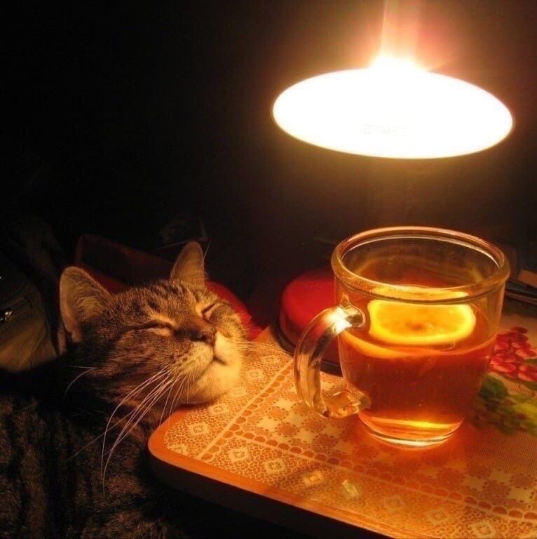

Чи можна котикам чай?

Чай та котики — це ідеальна формула затишного вечора, яка асоціюється з теплом, спокоєм та відпочинком
у компанії пухнастого друга. Коли за вікном прохолодно,
гаряче горнятко в руках та муркотіння на колінах створюють особливу атмосферу домашнього комфорту.
Проте у цьому тандемі є важливі правила безпеки, про які варто знати кожному господарю:
- Кофеїнова небезпека: Звичайний чорний, зелений чи пуер містять багато кофеїну.
Організм котів не здатний ефективно його розщеплювати,
тому навіть кілька ковтків міцного напою можуть зашкодити серцю та нервовій системі тварини.
- Привабливий ритуал: Коти за своєю природою неймовірно допитливі.
Їх часто приваблює не сам чай, а рух пари, тепло чашки або бажання поцупити воду саме з посуду господаря.
Через це пухнастики нерідко намагаються вмочити лапу в гарячий напій.
- Безпечне чаювання разом: Якщо ви хочете розділити цей ритуал із улюбленцем, запропонуйте йому альтернативу.
Спеціальний «котячий чай» — це заварена котяча м'ята (котовник) або ромашка кімнатної температури.
Такий напій повністю безпечний і принесе котику чимало задоволення, поки ви насолоджуєтеся своїм чаєм.
Дотримуючись цих простих правил, ви зможете зробити ваші спільні вечори не лише затишними,
але й абсолютно безпечними для чотирилапого друга.